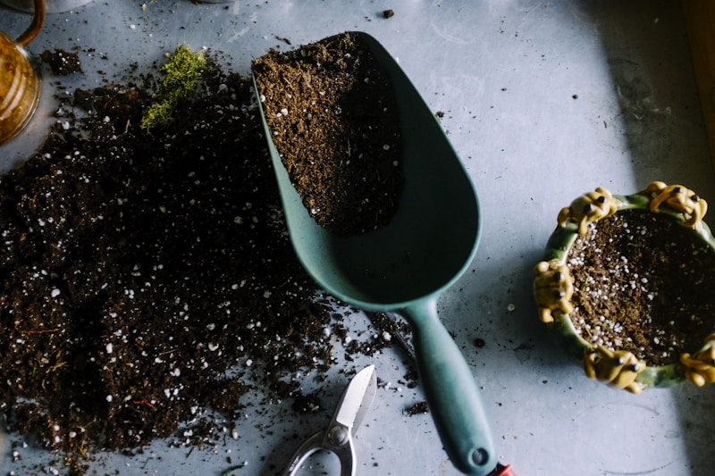
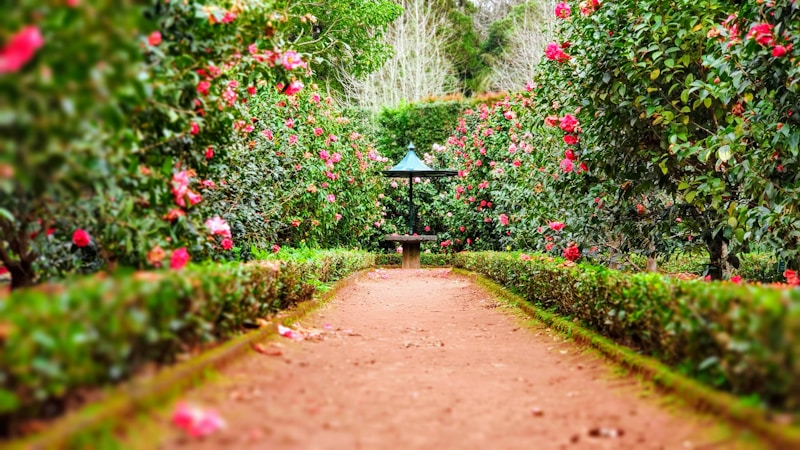

Wer hinter den Bäumen steht
Diese Seite erzählt, wie aus einem stillen Interesse an Bonsai eine Leidenschaft wurde — und warum jeder Baum hier mit Geduld statt Eile entsteht.
Wie alles begann
Der erste Bonsai war eher Zufall als Plan — ein kleiner, unscheinbarer Baum, der mehr Aufmerksamkeit brauchte, als zunächst erwartet. Aus dieser Aufmerksamkeit wurde mit der Zeit etwas Größeres: die Entdeckung, dass in der Arbeit mit Bonsai eine besondere Ruhe liegt.
„Geduld ist kein Warten — sie ist tägliche, aufmerksame Pflege.“
Aus einem einzelnen Baum wurden mit den Jahren viele, aus Versuch und Irrtum wurde Erfahrung, und aus einem stillen Hobby ein kleines Handwerk, das heute mit ebenso viel Sorgfalt betrieben wird wie am ersten Tag — nur mit deutlich mehr Wissen über Wurzeln, Wuchsformen und Geduld.
Was diese Arbeit leitet
Drei Grundsätze, die sich durch Anzucht, Pflege und Beratung ziehen.
Geduld statt Eile
Ein Bonsai lässt sich nicht beschleunigen. Jede Wuchsform braucht ihre eigene Zeit — und genau das macht den Reiz aus.
Nachhaltige Pflege
Substrat, Wasser und Standort werden bewusst gewählt — für Bäume, die über Jahrzehnte gut altern können.
Ehrliches Handwerk
Keine Verkaufsmasche, keine falschen Versprechen — nur ehrliche Beratung, auch wenn ein Baum mal nicht passt.
Aus Garten und Werkstatt
Ein paar Momentaufnahmen aus dem Entstehungsprozess — bis die echten Fotos folgen.

Wurzelarbeit, Frühjahr
Ruheplatz am FensterDer liebste Baum in der Sammlung ist fast immer der unscheinbarste — der, dem man die meisten Jahre Aufmerksamkeit gegeben hat.
Eine kleine, ehrliche Anekdote aus dem Alltag mit Bonsai